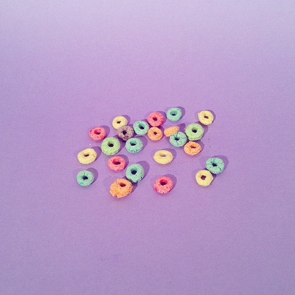
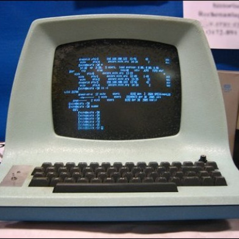

My favorite type of cereal is captain crunch but my family barely buys it because it's too sweet and is very unhealthy also I really don't like eating my cereal with milk becuase I don't like milk very much because of the texture and the taste ugh I don't like milk at all.
THESE ARE MY FAVORITE WEBSITES
VANS
Vans are a good everyday shoe because what's amazing about vans is that even after they get dirty they still look good. My favorite versions of the vans are the sk8 hi, low top sk8, the checkerboards and the checkerboard coasts. I like the colors white and black, blue, and light purple.

CACTI
My favorite type of cati are the ruby ball I like them in yellow or the redish-pink color they look really cool. I saw them at this plant market in boston. I don't have one yet but I'm getting one this summer to put in my room.


FJALLRAVEN KANKEN
I really want a fjallraven kanken those super nice backpacks. You can get them in a bunch of different colors and the colors are all super cute even the sand color looks good everyone says their so amazing and water proof and everything how their so beautiful. I want to get one in air blue or a lilac color I saw a couple of them at urban Outfitters and on this website called eastdane. I hope I get one soon because they are amazing.


SOME OF MY FAVORITE SONGS FOR SUMMER//2017:
-flowers by raye
-wild by Troye Sivan and Alessia Cara
-youth by Troye Sivan
-the kids don't wanna come home by Declan McKenna
-coaster by Khalid
-feel good by Dyalla
-red velvet by Dyalla
-beachside by Dyalla
-still there by Dyalla
-gone by Dyalla
-i'll be bad by Dyalla
-little bit more by Dyalla
-lovely girl by Dyalla
-fight for you by Dyalla
-only by Dyalla
SELF-LOVE CH.1
For the first chapter of the self-love series i'm doing on my net I wanted to talk about being confident in the clothes you decide to wear. I happen to really like the 90's and hipster look and some of the clothes I wear you would'nt see any one else wear such as a grandma style wind breaker or high waisted mom jeans or 90's styled top you probably won't see anyone wearing those clothes today. So when I see something I like I usually say oh would I really wear this or no one else is wearing this but I usually end up buying it anyway with the mind set that I'm the one that's wearing the clothing item this is my style and I really like how it looks and this style is apart of my personality. Mainly the people that question my style are my siblings and their usually just saying it to make fun of me and I unfortunatly have to wear a uniform to school so no one at my school really questions my style because they only see it through a instagram picture. Most of my freinds also share the love of 90's style with me so there's no rude remarks from them. Anyway if you do happen to have freinds or others who question your style just brush their remarks off and keep wearing what your wearing because it's a part of your style and your personality. :)
SELF LOVE CH.2
In this chapter I wanted to about talk the very impotrant topic of body confidence so let's get started. Society is constantly shaming those medium sized or larg sized or extra large sized wearers and those people with zits and other flaws that make them beautiful any way. Though I will happily say the model industry is progressing by putting plus sized women in ads smiling becuase they feel good about themselves. Many websites are having different sized women and race put on their website for modelling clothes. It shows other people a reality and they have those women do interviews and share encouraging messages to everyone about how, how much you weigh or the color of your skin or anything else that may not be up to societies "standards" does not define your worth. They talk about their struggles and they talk about how much they've grown and how their way more confident in their skin and love themselves and these messages can encourage girls and boys around the world to appreciate their one and only body they have instead shaming their body and saying negetive things which will put them down and make them feel terrible about themselves even though their very worth it and wonderfull the way they are.
SELF LOVE CH.3
A lot of people always say this but it's very important to always be your self because you'll be happy abou your self it can be scary but once you finally become your true self you'll enjoy life more. So those people that you're trying to fit in with even when you guys have noting in common or what they talk about is extrememly boring or out of interest to you but you think their the right people or the ones you have to be freinds with to fit in but if you're not happy with them then it's time for you to find some better freinds that you fell comfortable bein gyour true self around you vibe off of each other and you know exactly what their talking about then you'll be happier. You can talk to other people that have your interest and become friends with them and they don't mind your true self.
BOOKS I RLY WANT TO READ
note to self by connor franta I really want to read this book because it seems really inspirational and it has a lot of really important topics and topics im passionate about. It talks about connor's child hood and how he has grown a lot and a bunch of other great treasures in it I keep reading the sample on the Barnes and Noble site.

the other book I really want to read is milk and honey by rupi kaur. I want to read this book because it seems very powerful and it feels like rupi's thoughts were just poured onto the page and she did'nt stop writting until it was all out. Again I also keep reading the book sample on the Barnes and Noble site and it sounds really really good and I love the book cover I will probably end up trying to draw the cover of the book sometime.yep those are the books I really want to read right now. bye.
MY FAVORITE GIRL GROUPS
First is the girl group Salt-N-Peppa they played a big role in the hip hop industry of women. They were from Queens,New York and I have always loved their style and music they created together.

Then my other favorite girl group is Spice Girls. I still have to watch their movie "Spice World" but their music is great and it really gives off the late 90's and early 2000's vibe my favorite spice girls are Mel C and Mel B and my favorite song by them is "say you'll be there". I am also kind of inspired by their style especially Mel C's style. So those are my favorite girl groups.
I LOVE MEXICAN FOOD A WHOLE LOT
my favorite places to eat mexican food are district taco, chipotle, san antonio grill, and this spot in georgetown I can't pronounce the name but their food is so so so good. I like tacos,enchiladas, quesadillas,and burritos.yup.
THRIFTING
Well clothes,shoes,room decor,and books are getting more and more pricey so where can you find cheap stuff if your a broke teen like me, I have a solution. It's called the thrift store they have everything from tops to decor to shoes and it's super cheap. Also you can create and experiment with your style. Here are some tips for thrifting. Tip #1 is make sure you look through everything because you might over look a section and it might have exactly what your looking for. Tip #2 is have an open mind, for me I usaully go in with a general idea lets say I want to look for a jacket it may end up being a sweat shirt or a wind breaker you don't want to have a specific idea because you may not find it. Tip #3 is find out when the store you thrift at has sales going on this can help you save even more money different thrift stores have different sales some have sales like 50% off on certaint colored tags or stuff a bag for $5 so find out what sales your local thrift store has. Tip #4 is make freinds with the workers and other frequent shoppers this can make the whole shopping experience even more enjoyable.

MOM JEANS
The fashion trend of mom jeans began in the 1980's through the early 90's. Not only were mom wearing the jeans but it became a huge trend so of course everyone started wearing them. Mom jeans are made to sit on your nautral waist, and you can move around a lot in them. Today you can find many pairs of mom jeans in thrift stores. I really like how mom jeans look and they go with a lot of outfits. SNL made their famous jcpenney mom jeans ad with starring Tina Fey, Amy Poehler, Maya Rudolph, and Rachel Dratch this ad was trying to say how you should buy your mom a pair of mom jeans for mother's day. This ad is probably my favorite ad i've ever seen because it has a late 90's very early 2000's vibes to it.
MY FAVORITE YOUTUBERS
Anna Beatrice
Chelsea DIY
Rubyy Lyn
trevi
inayah
Brianna
MY FAVORITE MAKEUP LOOKS
some of these makeup looks I have tried and others I have not tried yet but here are a list of my favorite makeup looks.
peach: this is a really nice simple, bright but settled look I really like.

glossy eyelid: I really like this makeup look because it is also simple but it makes your eyes pop especially when in the sun.

sunset shadow: this look brings out eye colors such as green, brown, or blue.

natural: this makeup look allows you to show your real features with out putting on pounds and pounds of makeup.
glossy lips: I like this look because it's really easy to do and it looks fresh.
star lips: this look is really unique and I would wear this because it's a natural and fun look.

POPCORN
popcorn is one of my favorite snacks. My favorite type of popcorn is by the brand "orville redenbacker's" it's a really good brand of popcorn. I also like making my own popcorn on the stove at home. I was super happy when my P.E. teacher in 5th grade told me popcorn isn't very unhealthy.
PUGS
My favorite type of dogs are pugs their small furry and they have a wrinkly face, a short tai,l they live for about 15 years, and their originated and china. I really want a pug because their playful and clever. They come in colors such as black, apricot, fawn, and silver fawn.